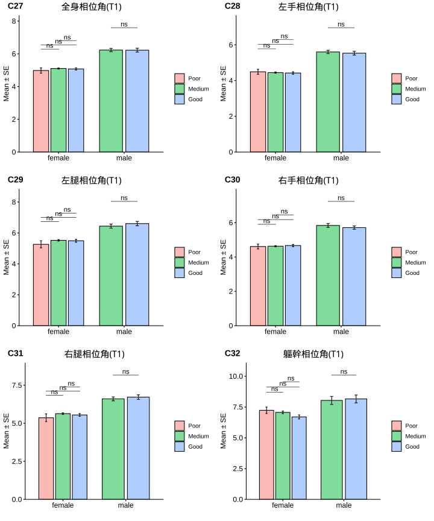
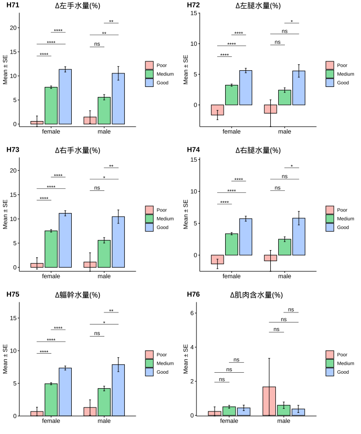

1.7 分層分析-3: 尿酸(Serum Uric Acid)
1.7.1 相關分析(Correlation Analysis)



1.7.2 Cutoff-1 (♂7.6/♀6.6)
| No change | Decrease | Increase | Normal>High | High>Normal | High>High | Sum | |
|---|---|---|---|---|---|---|---|
| female | 68 | 362 | 96 | 21 | 49 | 18 | 614 |
| male | 10 | 49 | 12 | 3 | 23 | 13 | 110 |
| Sum | 78 | 411 | 108 | 24 | 72 | 31 | 724 |
|
Cutoffs: Male: 7.6 (mg/dL) Female: 6.6(mg/dL) |


成效(Effectiveness)


成效(%)-Blood

| No change | Decrease | Increase | Normal>High | High>Normal | High>High | No change | Decrease | Increase | Normal>High | High>Normal | High>High | |
|---|---|---|---|---|---|---|---|---|---|---|---|---|
| 體重(T0) | 71.35 ± 1.35 | 72.04 ± 0.68 | 69.99 ± 1.3 | 76.43 ± 2.99 | 80.96 ± 1.92 | 84.68 ± 3.43 | 94.14 ± 9.41 | 92.05 ± 1.83 | 86.96 ± 4.12 | 106.73 ± 16.9 | 101.34 ± 3.5 | 109.38 ± 6.41 |
| BMI(T0) | 27.98 ± 0.56 | 27.77 ± 0.25 | 27.13 ± 0.4 | 29.4 ± 0.88 | 31.62 ± 0.71 | 32.61 ± 1.44 | 32.34 ± 3.39 | 30.74 ± 0.59 | 28.8 ± 1.28 | 34.84 ± 5.88 | 33.11 ± 0.94 | 35.75 ± 2.04 |
| 體脂重(T0) | 29.09 ± 0.93 | 28.53 ± 0.48 | 27.51 ± 0.84 | 33.06 ± 2.13 | 35.52 ± 1.34 | 37.76 ± 2.71 | 33.83 ± 6.88 | 29.91 ± 1.15 | 26.62 ± 2.82 | 38.1 ± 13.67 | 36.96 ± 2.65 | 43.29 ± 4.84 |
| 體脂率(T0) | 40.27 ± 0.7 | 38.83 ± 0.33 | 38.69 ± 0.58 | 42.53 ± 1.13 | 43.33 ± 0.71 | 43.79 ± 1.56 | 33.66 ± 2.83 | 32.17 ± 0.73 | 30.08 ± 2.22 | 33.57 ± 6.72 | 35.64 ± 1.43 | 38.28 ± 2.29 |
| 骨骼肌質量指數(T0) | 6.7 ± 0.09 | 6.86 ± 0.04 | 6.69 ± 0.08 | 6.89 ± 0.13 | 7.27 ± 0.11 | 7.4 ± 0.18 | 8.65 ± 0.41 | 8.84 ± 0.11 | 8.48 ± 0.27 | 9.67 ± 0.52 | 8.98 ± 0.11 | 9.18 ± 0.24 |
| 骨骼肌率(T0) | 32.45 ± 0.38 | 33.35 ± 0.18 | 33.25 ± 0.32 | 31.36 ± 0.59 | 31.05 ± 0.39 | 30.95 ± 0.88 | 37.24 ± 1.55 | 38.39 ± 0.43 | 39.47 ± 1.33 | 37.48 ± 3.66 | 36.4 ± 0.82 | 34.98 ± 1.31 |
| 內臟脂肪面積(T0) | 144.31 ± 5.5 | 141.06 ± 2.37 | 139.79 ± 4.43 | 168.44 ± 10.48 | 175.8 ± 5.05 | 191.79 ± 10.08 | 122.07 ± 14.6 | 122.77 ± 5.62 | 109.23 ± 14 | 105.25 ± 17.68 | 148.29 ± 10.94 | 180.26 ± 20.65 |
| 腰圍(T0) | 92.18 ± 1.23 | 91.88 ± 0.61 | 90.36 ± 1.1 | 97.68 ± 2.9 | 100.51 ± 1.53 | 103.34 ± 2.97 | 105.29 ± 6.06 | 103.86 ± 1.46 | 98.14 ± 3.44 | 111.2 ± 14.29 | 114.67 ± 3.51 | 118.12 ± 5.11 |
| 除脂體重(T0) | 42.26 ± 0.65 | 43.51 ± 0.29 | 42.48 ± 0.61 | 43.37 ± 1.04 | 45.43 ± 0.78 | 46.92 ± 1.27 | 60.31 ± 2.79 | 62.14 ± 1.07 | 60.34 ± 2.38 | 68.63 ± 3.41 | 64.39 ± 1.38 | 66.09 ± 2.32 |
| 基礎代謝率(T0) | 1283.01 ± 13.94 | 1309.93 ± 6.19 | 1287.71 ± 13.1 | 1306.86 ± 22.35 | 1351.43 ± 16.86 | 1383.33 ± 27.58 | 1672.9 ± 60.39 | 1712.2 ± 23.1 | 1673.33 ± 51.29 | 1852.33 ± 73.4 | 1760.74 ± 29.87 | 1797.62 ± 50.09 |
| 糖化血色素(T0) | 5.49 ± 0.04 | 5.45 ± 0.02 | 5.48 ± 0.06 | 5.55 ± 0.12 | 5.71 ± 0.06 | 5.59 ± 0.12 | 6.26 ± 0.32 | 5.73 ± 0.07 | 5.95 ± 0.23 | 6.03 ± 0.58 | 5.68 ± 0.09 | 5.97 ± 0.29 |
| 空腹血糖(T0) | 84.38 ± 1.17 | 85.21 ± 0.49 | 86.41 ± 1.63 | 85.95 ± 2.99 | 88.06 ± 1.83 | 84.72 ± 2.24 | 96.6 ± 4.95 | 90.27 ± 1.78 | 100.42 ± 10.57 | 99.67 ± 13.68 | 88.35 ± 2.28 | 92.08 ± 4.67 |
| 空腹胰島素(T0) | 11.58 ± 0.84 | 11.37 ± 0.42 | 10.14 ± 0.57 | 15.89 ± 2.67 | 17.63 ± 1.76 | 23.1 ± 5.46 | 19.32 ± 4.26 | 15.66 ± 1.42 | 16.8 ± 2.16 | 19.41 ± 14.71 | 20.74 ± 2.86 | 22.66 ± 3.26 |
| 胰島素阻抗值(T0) | 2.46 ± 0.2 | 2.54 ± 0.14 | 2.19 ± 0.13 | 3.42 ± 0.6 | 3.87 ± 0.38 | 4.97 ± 1.19 | 4.49 ± 0.89 | 3.59 ± 0.35 | 4.57 ± 1.2 | 5.77 ± 4.77 | 4.68 ± 0.78 | 5.3 ± 0.87 |
| β細胞功能(T0) | 199.42 ± 19.81 | 212.56 ± 11.53 | 252.94 ± 68.43 | 280.07 ± 47.64 | 285.98 ± 45.4 | 385.81 ± 80.26 | 251.27 ± 72.32 | 215.31 ± 21.85 | 202.71 ± 26.46 | 141.27 ± 67.65 | 338.46 ± 64.08 | 352.61 ± 54.99 |
| 三酸甘油脂(T0) | 102.13 ± 5.35 | 106.25 ± 3.06 | 90.91 ± 4.65 | 97.62 ± 11.18 | 155.45 ± 12.44 | 180.61 ± 52.76 | 154.9 ± 23.36 | 145.49 ± 10.25 | 183.42 ± 30.5 | 119.33 ± 29.04 | 179.48 ± 22.39 | 142.92 ± 26.87 |
| 總膽固醇(T0) | 200.74 ± 4.29 | 198.47 ± 2 | 193.65 ± 3.51 | 204.38 ± 10.07 | 195.57 ± 5.85 | 194.28 ± 8.16 | 171.8 ± 9.6 | 198.73 ± 5.09 | 187.75 ± 11.14 | 196.67 ± 6.17 | 192.39 ± 8.5 | 197.38 ± 16.75 |
| 高密度脂蛋白(T0) | 56.91 ± 1.73 | 56.58 ± 0.69 | 59.14 ± 1.4 | 57.41 ± 3.43 | 50.23 ± 1.32 | 45.23 ± 2.57 | 42.77 ± 1.68 | 45.95 ± 0.88 | 45.12 ± 2.88 | 46.03 ± 5.75 | 42.12 ± 1.73 | 45.67 ± 4.43 |
| 低密度脂蛋白(T0) | 125.03 ± 3.68 | 123.88 ± 1.77 | 117.86 ± 2.96 | 132.67 ± 8.37 | 122.33 ± 5.19 | 125.61 ± 8.38 | 109.8 ± 9.26 | 131.61 ± 4.04 | 118.08 ± 9.57 | 133.33 ± 7.22 | 123.96 ± 7.58 | 128.38 ± 14.82 |
| 尿酸(T0) | 4.81 ± 0.11 | 5.06 ± 0.04 | 4.31 ± 0.08 | 5.53 ± 0.15 | 7.33 ± 0.11 | 7.48 ± 0.17 | 5.68 ± 0.37 | 6.18 ± 0.12 | 5.3 ± 0.33 | 7 ± 0.31 | 8.35 ± 0.15 | 9.1 ± 0.41 |
| 澱粉脢(T0) | 43.59 ± 1.45 | 45.67 ± 0.76 | 45.44 ± 1.6 | 49.14 ± 3.74 | 44.53 ± 2.28 | 39.22 ± 2.53 | 43 ± 3.74 | 44.33 ± 2.33 | 44.5 ± 3.45 | 41 ± 5 | 39.17 ± 2.71 | 39.23 ± 4.72 |
| 解脂脢(T0) | 26.37 ± 2.39 | 23.98 ± 0.72 | 24.48 ± 1.08 | 24.52 ± 2.55 | 27.88 ± 2.54 | 27.83 ± 3.34 | 27.6 ± 3.61 | 24.92 ± 2.59 | 30.42 ± 6.03 | 27.67 ± 4.91 | 29.57 ± 4.53 | 20.69 ± 3.44 |
| 體重(T1) | 66.43 ± 1.33 | 67.59 ± 0.65 | 64.91 ± 1.23 | 69.46 ± 2.68 | 75.7 ± 1.9 | 78.43 ± 3.23 | 88.35 ± 9.16 | 85.3 ± 1.74 | 80.51 ± 3.79 | 95.8 ± 14.64 | 95.14 ± 3.52 | 101.79 ± 6.43 |
| BMI(T1) | 25.75 ± 0.49 | 26.04 ± 0.24 | 25.15 ± 0.38 | 26.72 ± 0.77 | 29.57 ± 0.71 | 30.2 ± 1.35 | 30.38 ± 3.31 | 28.49 ± 0.56 | 26.69 ± 1.26 | 31.29 ± 5.12 | 31.08 ± 0.97 | 33.27 ± 2.06 |
| 體脂重(T1) | 25.34 ± 0.9 | 25.55 ± 0.47 | 24.13 ± 0.78 | 28.92 ± 2.03 | 32.13 ± 1.37 | 33.66 ± 2.5 | 29.57 ± 6.6 | 25.24 ± 1.14 | 22.32 ± 2.89 | 30.37 ± 11.52 | 32.63 ± 2.76 | 37.25 ± 4.9 |
| 體脂率(T1) | 37.52 ± 0.71 | 36.94 ± 0.35 | 36.5 ± 0.59 | 40.81 ± 1.38 | 41.72 ± 0.83 | 42.12 ± 1.62 | 31.11 ± 3.04 | 29.14 ± 0.84 | 26.93 ± 2.53 | 29.57 ± 6.94 | 33.26 ± 1.58 | 34.95 ± 2.59 |
| 骨骼肌質量指數(T1) | 6.44 ± 0.08 | 6.61 ± 0.04 | 6.42 ± 0.07 | 6.43 ± 0.12 | 6.97 ± 0.11 | 7.11 ± 0.18 | 8.54 ± 0.47 | 8.52 ± 0.11 | 8.19 ± 0.22 | 9.17 ± 0.47 | 8.7 ± 0.12 | 8.96 ± 0.25 |
| 骨骼肌率(T1) | 33.8 ± 0.37 | 34.23 ± 0.19 | 34.25 ± 0.32 | 31.98 ± 0.73 | 31.78 ± 0.44 | 31.7 ± 0.89 | 38.59 ± 1.69 | 39.97 ± 0.49 | 41.05 ± 1.54 | 39.68 ± 3.83 | 37.69 ± 0.91 | 36.69 ± 1.46 |
| 內臟脂肪面積(T1) | 124.75 ± 5.31 | 125.36 ± 2.38 | 120.4 ± 4.26 | 150.39 ± 10.2 | 161.32 ± 5.33 | 161.97 ± 12.11 | 103.64 ± 11.3 | 101.76 ± 5.34 | 96.33 ± 12.56 | 129.5 ± 49.53 | 131.74 ± 11.97 | 133.37 ± 19.91 |
| 腰圍(T1) | 87.69 ± 1.27 | 87.5 ± 0.6 | 85.27 ± 1.07 | 90.84 ± 2.73 | 95.39 ± 1.56 | 97.76 ± 3.04 | 97.89 ± 5.36 | 97.04 ± 1.47 | 91.42 ± 3.61 | 101.97 ± 13.47 | 108.76 ± 3.68 | 110.3 ± 5.43 |
| 除脂體重(T1) | 41.09 ± 0.6 | 42.04 ± 0.28 | 40.79 ± 0.58 | 40.54 ± 0.92 | 43.57 ± 0.73 | 44.77 ± 1.28 | 58.78 ± 2.92 | 60.06 ± 0.99 | 58.19 ± 2.05 | 65.43 ± 3.55 | 62.5 ± 1.25 | 64.55 ± 2.28 |
| 基礎代謝率(T1) | 1257.63 ± 12.9 | 1278.06 ± 5.98 | 1251.06 ± 12.59 | 1245.71 ± 19.81 | 1311 ± 15.74 | 1337.06 ± 27.7 | 1639.6 ± 63.12 | 1667.16 ± 21.46 | 1626.83 ± 44.35 | 1783.33 ± 76.83 | 1720.13 ± 26.98 | 1764.08 ± 49.44 |
| 糖化血色素(T1) | 5.25 ± 0.04 | 5.22 ± 0.02 | 5.19 ± 0.04 | 5.17 ± 0.07 | 5.43 ± 0.05 | 5.27 ± 0.08 | 5.93 ± 0.33 | 5.4 ± 0.05 | 5.51 ± 0.12 | 5.43 ± 0.12 | 5.4 ± 0.08 | 5.4 ± 0.09 |
| 空腹血糖(T1) | 76.41 ± 1.2 | 78.51 ± 0.4 | 73.54 ± 1.14 | 69 ± 1.79 | 80.47 ± 1.06 | 73 ± 2.48 | 84 ± 5.84 | 79.22 ± 1.08 | 76 ± 3.02 | 74.33 ± 6.69 | 80.09 ± 1.95 | 77.85 ± 3.23 |
| 空腹胰島素(T1) | 8.7 ± 0.76 | 9.54 ± 0.35 | 6.9 ± 0.59 | 9.51 ± 1.72 | 13.91 ± 1.19 | 16.85 ± 3.71 | 11.93 ± 2.49 | 11.48 ± 1.17 | 9.12 ± 2.52 | 6.7 ± 4.77 | 20.19 ± 4.22 | 13.77 ± 3.07 |
| 胰島素阻抗值(T1) | 1.73 ± 0.17 | 1.9 ± 0.08 | 1.32 ± 0.13 | 1.68 ± 0.32 | 2.82 ± 0.25 | 3.3 ± 0.81 | 2.52 ± 0.55 | 2.28 ± 0.24 | 1.85 ± 0.53 | 1.37 ± 0.98 | 4.25 ± 1.06 | 2.67 ± 0.59 |
| β細胞功能(T1) | 335.32 ± 68.51 | 233.09 ± 18.1 | 238.93 ± 50.16 | 806.84 ± 333.98 | 284.31 ± 31.93 | 752.47 ± 292.08 | 289.76 ± 60.58 | 226.47 ± 58.51 | 271.41 ± 72.04 | 90.23 ± 119.14 | 362.49 ± 78.2 | 458.13 ± 106.9 |
| 三酸甘油脂(T1) | 100.03 ± 5.65 | 91.18 ± 2.79 | 87.96 ± 3.14 | 104.38 ± 6.86 | 112.27 ± 6.22 | 113.83 ± 8.33 | 114 ± 15.56 | 113.94 ± 7.29 | 138.5 ± 14.26 | 109.33 ± 10.84 | 152.83 ± 19.61 | 133.31 ± 14.82 |
| 總膽固醇(T1) | 214.19 ± 6.01 | 200.69 ± 2.24 | 201.16 ± 4.82 | 211.14 ± 13.87 | 188.1 ± 5.99 | 185.78 ± 8.51 | 162 ± 9.74 | 194.71 ± 6.92 | 201.42 ± 16.84 | 231.33 ± 8.57 | 179.48 ± 7.1 | 201.69 ± 17.97 |
| 高密度脂蛋白(T1) | 50.92 ± 1.51 | 51.8 ± 0.62 | 50.57 ± 1.27 | 43.88 ± 2.5 | 46.96 ± 1.15 | 40.72 ± 2.51 | 39.73 ± 1.88 | 42.4 ± 1.15 | 43.18 ± 3.83 | 44.07 ± 5.84 | 38.91 ± 1.72 | 38.22 ± 3.35 |
| 低密度脂蛋白(T1) | 139.79 ± 5.26 | 129.52 ± 1.92 | 129.31 ± 3.84 | 144.67 ± 12.26 | 119.88 ± 5.13 | 123.5 ± 8.05 | 104.1 ± 8.51 | 129.92 ± 5.56 | 132.75 ± 16.13 | 163.67 ± 9.82 | 117.3 ± 6.35 | 136.85 ± 14.59 |
| 尿酸(T1) | 4.81 ± 0.11 | 3.99 ± 0.04 | 5.12 ± 0.09 | 7.48 ± 0.17 | 5.14 ± 0.11 | 7.57 ± 0.27 | 5.69 ± 0.37 | 4.82 ± 0.11 | 6.34 ± 0.29 | 8.47 ± 0.47 | 6.62 ± 0.13 | 8.92 ± 0.31 |
| 澱粉脢(T1) | 44.31 ± 1.65 | 48.2 ± 0.88 | 45.14 ± 1.73 | 46 ± 3.78 | 47.86 ± 2.39 | 40.5 ± 2.25 | 44.4 ± 3.55 | 46.06 ± 3.12 | 45.67 ± 4.6 | 44 ± 8.66 | 40.09 ± 2.35 | 39.69 ± 4.68 |
| 解脂脢(T1) | 36 ± 2.34 | 36.43 ± 1.19 | 35.12 ± 1.77 | 39.9 ± 5.33 | 41.71 ± 4.07 | 35.94 ± 3.47 | 28.5 ± 1.95 | 42.49 ± 6.54 | 35.92 ± 6.44 | 36 ± 16.77 | 36.91 ± 2.97 | 27.92 ± 4.42 |
| 年齡 | 39.19 ± 1.44 | 38.56 ± 0.51 | 39.36 ± 0.91 | 36.9 ± 2.73 | 44.71 ± 1.88 | 37 ± 1.6 | 44.4 ± 3.64 | 42.08 ± 1.73 | 38.58 ± 3.07 | 37 ± 2.52 | 38.22 ± 2.48 | 32.77 ± 3.13 |
| 飲食紀錄完成率(%) | 77.21 ± 3.29 | 70.67 ± 1.58 | 81.64 ± 2.42 | 84.3 ± 4.08 | 65.73 ± 4.49 | 86.84 ± 6.12 | 63.79 ± 12.65 | 70.4 ± 4.31 | 68.71 ± 11.07 | 93.57 ± 2.34 | 64.15 ± 6.95 | 67.19 ± 7.72 |
| 紀錄數量 | 186.63 ± 14.28 | 183.26 ± 7.02 | 226.37 ± 19.37 | 271.95 ± 48.88 | 156.61 ± 16.64 | 242.73 ± 33.71 | 145.71 ± 47.27 | 206.8 ± 24.29 | 205.21 ± 59.57 | 168.22 ± 20.57 | 175.5 ± 52.18 | 113.87 ± 25.89 |
| 上傳照片張數 | 170.49 ± 11.75 | 147.85 ± 5.36 | 183.72 ± 11.29 | 177.21 ± 19.39 | 131.69 ± 13.19 | 180.92 ± 25.3 | 118.73 ± 27.97 | 154.54 ± 18.62 | 183.87 ± 41.97 | 175.66 ± 13.1 | 164.81 ± 32.43 | 116.09 ± 24.12 |
| 碳水攝取率(E%) | 17.94 ± 0.82 | 20.07 ± 0.37 | 17.21 ± 0.56 | 15.66 ± 1.05 | 19.34 ± 0.93 | 14.98 ± 1.7 | 18.71 ± 2.18 | 18.76 ± 0.99 | 17.34 ± 2.44 | 15.03 ± 3.59 | 19 ± 1.59 | 14.08 ± 1.36 |
| 蛋白攝取率(E%) | 27.92 ± 0.32 | 26.98 ± 0.18 | 27.46 ± 0.26 | 27.98 ± 0.42 | 26.69 ± 0.31 | 28.95 ± 0.64 | 28.45 ± 0.8 | 27.52 ± 0.4 | 27.44 ± 0.77 | 30.52 ± 0.24 | 27.2 ± 0.68 | 28.9 ± 0.98 |
| 脂肪攝取率(E%) | 54.14 ± 0.62 | 52.95 ± 0.28 | 55.33 ± 0.45 | 56.36 ± 0.99 | 53.97 ± 0.76 | 56.06 ± 1.25 | 52.83 ± 1.83 | 53.72 ± 0.75 | 55.22 ± 1.82 | 54.45 ± 3.58 | 53.79 ± 1.17 | 57.01 ± 0.93 |
| 總攝取熱量(日) | 780.09 ± 38.71 | 715.1 ± 18.09 | 816.14 ± 28.43 | 859.8 ± 56.55 | 687.28 ± 51.3 | 872.88 ± 65.7 | 773.44 ± 170.06 | 805.31 ± 59.02 | 778.99 ± 141.92 | 928.08 ± 109.97 | 742.2 ± 94.11 | 747.84 ± 88.32 |
| 綠燈率 | 84.24 ± 1.84 | 79.79 ± 0.87 | 84.06 ± 1.67 | 90.68 ± 1.83 | 79.93 ± 2.05 | 86.21 ± 4.24 | 79.33 ± 5.88 | 79.89 ± 2.55 | 85.47 ± 3.98 | 88.74 ± 1.75 | 79.03 ± 4.58 | 84.83 ± 3.83 |
| 黃燈率 | 13.65 ± 1.55 | 17.59 ± 0.8 | 14.25 ± 1.49 | 8.27 ± 1.65 | 15.48 ± 1.69 | 12.33 ± 3.97 | 18.71 ± 6.09 | 17.58 ± 2.25 | 13.79 ± 3.59 | 11.26 ± 1.75 | 15.53 ± 3.32 | 14.17 ± 3.59 |
| 紅燈率 | 2.12 ± 0.51 | 2.62 ± 0.25 | 1.69 ± 0.38 | 1.05 ± 0.51 | 4.59 ± 1.45 | 1.46 ± 0.49 | 1.96 ± 0.81 | 2.53 ± 0.79 | 0.74 ± 0.47 | 0 ± 0 | 5.44 ± 2.01 | 1 ± 0.65 |
| 水果(日) | 0.07 ± 0.01 | 0.06 ± 0.01 | 0.06 ± 0.01 | 0.05 ± 0.02 | 0.07 ± 0.02 | 0.01 ± 0 | 0.03 ± 0.01 | 0.04 ± 0.01 | 0.02 ± 0.01 | 0.02 ± 0.02 | 0.06 ± 0.03 | 0.03 ± 0.01 |
| 蔬菜(日) | 2.7 ± 0.18 | 2.32 ± 0.07 | 3 ± 0.13 | 3 ± 0.24 | 2.26 ± 0.21 | 3.1 ± 0.3 | 2.24 ± 0.54 | 2.38 ± 0.22 | 2.94 ± 0.57 | 3.62 ± 0.63 | 2.35 ± 0.35 | 2.35 ± 0.34 |
| 全穀雜糧(日) | 1.13 ± 0.09 | 1.34 ± 0.05 | 1.06 ± 0.06 | 1.05 ± 0.15 | 1.15 ± 0.11 | 0.82 ± 0.14 | 1.27 ± 0.32 | 1.47 ± 0.16 | 0.84 ± 0.17 | 0.89 ± 0.19 | 1.22 ± 0.19 | 0.83 ± 0.15 |
| 蛋豆魚肉(日) | 7.01 ± 0.37 | 6.09 ± 0.16 | 7.25 ± 0.28 | 7.71 ± 0.52 | 5.84 ± 0.47 | 8.37 ± 0.69 | 7.22 ± 1.6 | 7.13 ± 0.54 | 7.21 ± 1.41 | 9.31 ± 1.19 | 6.51 ± 0.91 | 7.04 ± 0.91 |
| 乳品(日) | 0.05 ± 0.01 | 0.05 ± 0 | 0.04 ± 0.01 | 0.03 ± 0.01 | 0.05 ± 0.01 | 0.03 ± 0.01 | 0.03 ± 0.01 | 0.03 ± 0.01 | 0.01 ± 0.01 | 0.01 ± 0.01 | 0.04 ± 0.02 | 0.02 ± 0.01 |
| 油脂(日) | 2.86 ± 0.17 | 2.74 ± 0.08 | 3.25 ± 0.13 | 3.24 ± 0.22 | 2.65 ± 0.22 | 3.31 ± 0.33 | 2.67 ± 0.63 | 3 ± 0.23 | 2.89 ± 0.53 | 2.89 ± 0.69 | 2.71 ± 0.39 | 2.73 ± 0.36 |
| ∆體重 | 4.92 ± 0.27 | 4.45 ± 0.12 | 5.08 ± 0.24 | 6.97 ± 0.66 | 5.26 ± 0.29 | 6.25 ± 0.63 | 5.79 ± 1.24 | 6.75 ± 0.44 | 6.45 ± 1.21 | 10.93 ± 3 | 6.2 ± 0.7 | 7.59 ± 0.75 |
| ∆BMI | 2.23 ± 0.33 | 1.72 ± 0.04 | 1.98 ± 0.09 | 2.68 ± 0.26 | 2.05 ± 0.11 | 2.41 ± 0.24 | 1.95 ± 0.42 | 2.25 ± 0.15 | 2.11 ± 0.4 | 3.56 ± 1 | 2.03 ± 0.22 | 2.48 ± 0.25 |
| ∆體脂重 | 3.75 ± 0.23 | 2.98 ± 0.1 | 3.39 ± 0.22 | 4.14 ± 0.43 | 3.39 ± 0.23 | 4.11 ± 0.46 | 4.26 ± 0.78 | 4.67 ± 0.37 | 4.3 ± 0.7 | 7.73 ± 2.31 | 4.32 ± 0.58 | 6.05 ± 0.75 |
| ∆體脂率 | 2.75 ± 0.28 | 1.89 ± 0.1 | 2.19 ± 0.22 | 1.72 ± 0.45 | 1.61 ± 0.25 | 1.68 ± 0.28 | 2.55 ± 0.56 | 3.03 ± 0.35 | 3.14 ± 0.57 | 4 ± 0.47 | 2.39 ± 0.42 | 3.32 ± 0.64 |
| ∆骨骼肌質量指數 | 0.26 ± 0.03 | 0.25 ± 0.01 | 0.27 ± 0.02 | 0.45 ± 0.06 | 0.3 ± 0.03 | 0.29 ± 0.06 | 0.11 ± 0.12 | 0.32 ± 0.04 | 0.29 ± 0.07 | 0.5 ± 0.12 | 0.27 ± 0.04 | 0.22 ± 0.06 |
| ∆骨骼肌重 | 0.73 ± 0.11 | 0.9 ± 0.04 | 1.04 ± 0.08 | 1.77 ± 0.25 | 1.13 ± 0.11 | 1.31 ± 0.16 | 0.96 ± 0.41 | 1.29 ± 0.18 | 1.38 ± 0.36 | 1.87 ± 0.74 | 1.13 ± 0.23 | 1.05 ± 0.32 |
| ∆內臟脂肪面積 | 17.72 ± 1.17 | 15.23 ± 0.5 | 17.86 ± 1.04 | 15.74 ± 2.86 | 14.85 ± 1.15 | 19.17 ± 2.7 | 21.28 ± 5.69 | 22.37 ± 2.17 | 18.58 ± 2.79 | 23.35 ± 1.67 | 24.37 ± 2.86 | 26.46 ± 5.17 |
| ∆腰圍 | 4.49 ± 0.39 | 4.37 ± 0.15 | 5.09 ± 0.29 | 6.84 ± 0.94 | 5.12 ± 0.47 | 5.58 ± 0.88 | 7.4 ± 1.54 | 6.81 ± 0.54 | 6.72 ± 0.93 | 9.23 ± 1.8 | 5.91 ± 0.75 | 7.82 ± 1.36 |
| ∆除脂體重 | 1.17 ± 0.2 | 1.47 ± 0.07 | 1.69 ± 0.14 | 2.83 ± 0.42 | 1.87 ± 0.19 | 2.14 ± 0.27 | 1.53 ± 0.69 | 2.08 ± 0.3 | 2.15 ± 0.6 | 3.2 ± 0.95 | 1.88 ± 0.37 | 1.55 ± 0.49 |
| ∆基礎代謝率 | -25.38 ± 4.41 | -31.86 ± 1.58 | -36.65 ± 3.08 | -61.14 ± 9.05 | -40.43 ± 4.13 | -46.28 ± 5.86 | -33.3 ± 14.84 | -45.04 ± 6.51 | -46.5 ± 12.98 | -69 ± 20.5 | -40.61 ± 8.05 | -33.54 ± 10.59 |
| ∆糖化血色素 | 0.24 ± 0.03 | 0.22 ± 0.01 | 0.29 ± 0.04 | 0.38 ± 0.07 | 0.29 ± 0.04 | 0.32 ± 0.07 | 0.33 ± 0.1 | 0.33 ± 0.05 | 0.44 ± 0.14 | 0.6 ± 0.57 | 0.29 ± 0.04 | 0.57 ± 0.27 |
| ∆空腹血糖 | 7.97 ± 1.15 | 6.71 ± 0.48 | 12.86 ± 1.28 | 16.95 ± 3.37 | 7.59 ± 1.93 | 11.72 ± 2.12 | 12.6 ± 3.93 | 11.04 ± 1.76 | 24.42 ± 10.46 | 25.33 ± 11.55 | 8.26 ± 1.74 | 14.23 ± 4.55 |
| ∆空腹胰島素 | 2.78 ± 0.77 | 1.85 ± 0.38 | 3.25 ± 0.49 | 6.38 ± 2.09 | 3.72 ± 1.41 | 6.25 ± 4.85 | 7.39 ± 3.02 | 4.18 ± 1.41 | 6.27 ± 2.5 | 12.71 ± 10 | 0.55 ± 2.58 | 8.89 ± 3.51 |
| ∆胰島素阻抗值 | 0.73 ± 0.17 | 0.64 ± 0.13 | 0.86 ± 0.1 | 1.74 ± 0.46 | 1.04 ± 0.33 | 1.67 ± 1.05 | 1.97 ± 0.65 | 1.31 ± 0.34 | 2.72 ± 1.26 | 4.4 ± 3.8 | 0.43 ± 0.54 | 2.63 ± 0.9 |
| ∆β細胞功能 | -135.9 ± 69.81 | -20.54 ± 21.03 | 14.01 ± 83.25 | -526.77 ± 317.23 | 1.67 ± 27.39 | -366.67 ± 296.91 | -38.49 ± 78.97 | -11.16 ± 57.24 | -68.7 ± 72.47 | 51.03 ± 56.93 | -24.03 ± 75.61 | -105.52 ± 87.64 |
| ∆三酸甘油脂 | 2.1 ± 5.57 | 15.07 ± 2.45 | 2.95 ± 3.46 | -6.76 ± 10.18 | 43.18 ± 10.13 | 66.78 ± 49.86 | 40.9 ± 18.46 | 31.55 ± 8.06 | 44.92 ± 29.48 | 10 ± 19.22 | 26.65 ± 15.89 | 9.62 ± 16.24 |
| ∆總膽固醇 | -13.46 ± 4.33 | -2.22 ± 1.69 | -7.51 ± 3.98 | -6.76 ± 6.17 | 7.47 ± 5.66 | 8.5 ± 5.28 | 9.8 ± 10.54 | 4.02 ± 4.5 | -13.67 ± 12.62 | -34.67 ± 14.62 | 12.91 ± 6.61 | -4.31 ± 12.52 |
| ∆高密度脂蛋白 | 5.99 ± 1.07 | 4.79 ± 0.45 | 8.57 ± 0.89 | 13.54 ± 2.04 | 3.27 ± 1.13 | 4.51 ± 1.37 | 3.04 ± 1.12 | 3.55 ± 1.04 | 1.94 ± 3.72 | 1.97 ± 3.4 | 3.21 ± 1.3 | 7.45 ± 2.1 |
| ∆低密度脂蛋白 | -14.76 ± 3.52 | -5.64 ± 1.5 | -11.45 ± 3.44 | -12 ± 5.78 | 2.45 ± 4.95 | 2.11 ± 4.84 | 5.7 ± 8.98 | 1.69 ± 3.64 | -14.67 ± 11.17 | -30.33 ± 12.68 | 6.65 ± 5.69 | -8.46 ± 11.55 |
| ∆尿酸 | 0 ± 0.02 | -1.07 ± 0.03 | 0.8 ± 0.05 | 1.95 ± 0.25 | -2.19 ± 0.14 | 0.08 ± 0.35 | 0.01 ± 0.05 | -1.36 ± 0.1 | 1.04 ± 0.21 | 1.47 ± 0.71 | -1.73 ± 0.18 | -0.18 ± 0.55 |
| ∆澱粉脢 | 0.72 ± 1.21 | 2.53 ± 0.53 | -0.3 ± 0.78 | -3.14 ± 2.23 | 3.33 ± 1.3 | 1.28 ± 1.54 | 1.4 ± 1.77 | 1.73 ± 2 | 1.17 ± 3.61 | 3 ± 5 | 0.91 ± 1.46 | 0.46 ± 1.49 |
| ∆解脂脢 | 9.63 ± 2.2 | 12.45 ± 0.93 | 10.65 ± 1.46 | 15.38 ± 4.51 | 13.84 ± 3.13 | 8.11 ± 3.49 | 0.9 ± 3.16 | 17.57 ± 5.23 | 5.5 ± 8.67 | 8.33 ± 15.06 | 7.35 ± 3.27 | 7.23 ± 2.44 |
| ∆體重(%) | 6.96 ± 0.38 | 6.2 ± 0.15 | 7.28 ± 0.32 | 9 ± 0.72 | 6.61 ± 0.36 | 7.38 ± 0.61 | 6.17 ± 1.37 | 7.32 ± 0.45 | 7.3 ± 1.33 | 10.13 ± 1.91 | 6.22 ± 0.67 | 7.18 ± 0.81 |
| ∆BMI(%) | 7.62 ± 0.76 | 6.21 ± 0.15 | 7.28 ± 0.32 | 9 ± 0.72 | 6.6 ± 0.36 | 7.38 ± 0.61 | 6.12 ± 1.36 | 7.3 ± 0.45 | 7.31 ± 1.33 | 10.11 ± 1.92 | 6.22 ± 0.67 | 7.18 ± 0.82 |
| ∆體脂重(%) | 13.33 ± 0.75 | 10.86 ± 0.35 | 12.37 ± 0.8 | 12.92 ± 1.35 | 10.26 ± 0.82 | 11.06 ± 1.04 | 14.37 ± 3.22 | 16.22 ± 1.33 | 17.8 ± 2.93 | 21.87 ± 4.12 | 12.82 ± 1.65 | 15.86 ± 2.36 |
| ∆體脂率(%) | 6.89 ± 0.6 | 5.04 ± 0.29 | 5.57 ± 0.67 | 4.34 ± 1.14 | 3.94 ± 0.65 | 3.98 ± 0.71 | 8.77 ± 2.72 | 9.73 ± 1.14 | 11.55 ± 2.21 | 13.15 ± 3.65 | 7.14 ± 1.24 | 9.44 ± 1.98 |
| ∆骨骼肌質量指數(%) | 3.8 ± 0.44 | 3.54 ± 0.16 | 4.03 ± 0.32 | 6.49 ± 0.83 | 4.17 ± 0.36 | 3.98 ± 0.75 | 1.42 ± 1.3 | 3.61 ± 0.41 | 3.25 ± 0.84 | 5.13 ± 1.04 | 3.05 ± 0.5 | 2.37 ± 0.7 |
| ∆骨骼肌重(%) | 2.93 ± 0.63 | 3.73 ± 0.17 | 4.49 ± 0.34 | 7.3 ± 0.96 | 4.49 ± 0.43 | 5.12 ± 0.58 | 2.87 ± 1.24 | 3.55 ± 0.47 | 3.79 ± 1.03 | 4.83 ± 1.91 | 3 ± 0.61 | 2.78 ± 0.9 |
| ∆內臟脂肪面積(%) | 13.72 ± 0.99 | 11.68 ± 0.42 | 13.83 ± 0.83 | 9.69 ± 1.88 | 9.05 ± 0.8 | 11.15 ± 1.81 | 18.2 ± 4.92 | 18.92 ± 1.72 | 19.3 ± 3.33 | 23.58 ± 5.55 | 17.08 ± 1.61 | 16.6 ± 3.67 |
| ∆腰圍(%) | 4.9 ± 0.41 | 4.75 ± 0.16 | 5.62 ± 0.33 | 6.93 ± 0.92 | 5.12 ± 0.46 | 5.43 ± 0.84 | 6.83 ± 1.38 | 6.57 ± 0.53 | 6.93 ± 0.92 | 8.4 ± 1.61 | 5.28 ± 0.66 | 6.81 ± 1.22 |
| ∆除脂體重(%) | 2.56 ± 0.6 | 3.34 ± 0.16 | 3.95 ± 0.32 | 6.38 ± 0.9 | 4.03 ± 0.4 | 4.6 ± 0.56 | 2.59 ± 1.18 | 3.24 ± 0.45 | 3.29 ± 1.01 | 4.7 ± 1.43 | 2.84 ± 0.55 | 2.32 ± 0.77 |
| ∆基礎代謝率(%) | -1.88 ± 0.39 | -2.4 ± 0.12 | -2.81 ± 0.23 | -4.6 ± 0.66 | -2.95 ± 0.29 | -3.35 ± 0.41 | -2.02 ± 0.91 | -2.56 ± 0.36 | -2.62 ± 0.77 | -3.74 ± 1.13 | -2.25 ± 0.44 | -1.85 ± 0.61 |
| ∆糖化血色素(%) | 4.38 ± 0.45 | 3.93 ± 0.2 | 4.99 ± 0.53 | 6.48 ± 1.01 | 4.88 ± 0.62 | 5.37 ± 1.13 | 5.29 ± 1.56 | 5.52 ± 0.73 | 6.8 ± 1.87 | 8.45 ± 8.03 | 4.99 ± 0.69 | 7.88 ± 3.06 |
| ∆空腹血糖(%) | 8.94 ± 1.34 | 7.25 ± 0.52 | 13.96 ± 1.16 | 18.41 ± 2.88 | 7.08 ± 1.97 | 13.64 ± 2.47 | 12.98 ± 3.77 | 10.97 ± 1.82 | 19.49 ± 5.61 | 23.73 ± 9.07 | 8.86 ± 1.93 | 13.65 ± 4.41 |
| ∆空腹胰島素(%) | 9.49 ± 7.9 | 2.56 ± 3.06 | 27.27 ± 4.15 | 27.39 ± 9.96 | -3.02 ± 14.94 | 20.52 ± 12.95 | 31.17 ± 9.3 | 6.54 ± 14.07 | 40.48 ± 11.52 | 64.04 ± 12.26 | 2.51 ± 10.55 | 34.95 ± 11.59 |
| ∆胰島素阻抗值(%) | 8.44 ± 10.36 | 7.35 ± 3.17 | 35.92 ± 3.98 | 40.08 ± 8.41 | -4.38 ± 19.48 | 28.6 ± 12.73 | 39.2 ± 9.44 | 10.93 ± 16.34 | 49.39 ± 12.1 | 69.2 ± 14.01 | 10 ± 10.39 | 40.72 ± 12.67 |
| ∆β細胞功能(%) | -96.31 ± 48.64 | -46.84 ± 10.46 | -77.75 ± 43.55 | -121.96 ± 158.17 | -21.07 ± 7.83 | -134.86 ± 104.49 | -59.71 ± 40.62 | -2.39 ± 24.16 | -54.91 ± 33.25 | 103.15 ± 97.12 | -31.26 ± 26.24 | -41.42 ± 21.51 |
| ∆三酸甘油脂(%) | -8.37 ± 6.27 | 5.99 ± 1.87 | -7.26 ± 3.8 | -26.51 ± 15 | 12.47 ± 5.94 | 11.44 ± 8.54 | 15.11 ± 13.98 | 14.57 ± 4.86 | 7.27 ± 11.56 | 1.75 ± 13.63 | 7.35 ± 8.26 | -8.08 ± 8.41 |
| ∆總膽固醇(%) | -6.92 ± 2.18 | -1.89 ± 0.82 | -4.38 ± 1.98 | -2.51 ± 2.74 | 2.46 ± 2.72 | 4.1 ± 2.59 | 4.81 ± 5.15 | 2.13 ± 2.21 | -7.68 ± 6.74 | -18.11 ± 7.78 | 5.26 ± 3.14 | -3.59 ± 6.73 |
| ∆高密度脂蛋白(%) | 9.41 ± 1.7 | 7.39 ± 0.75 | 13.8 ± 1.31 | 22.39 ± 2.7 | 4.99 ± 2.24 | 9.36 ± 2.83 | 7.08 ± 2.67 | 7.24 ± 2.16 | 2.86 ± 8.64 | 4.04 ± 8 | 6.95 ± 3.04 | 14.05 ± 3.72 |
| ∆低密度脂蛋白(%) | -12.05 ± 2.84 | -6.87 ± 1.26 | -11.74 ± 2.89 | -7.79 ± 3.87 | -1.32 ± 4.13 | 0.21 ± 4.06 | 3.46 ± 7.5 | 1.44 ± 2.65 | -11.27 ± 10.41 | -23.57 ± 10.21 | 2.49 ± 4.83 | -11.62 ± 11.05 |
| ∆尿酸(%) | 0 ± 0.35 | -20.97 ± 0.53 | 19.51 ± 1.33 | 38.13 ± 6.14 | -29.47 ± 1.55 | 2.31 ± 4.63 | 0.24 ± 0.81 | -21.64 ± 1.42 | 22.12 ± 5.95 | 21.84 ± 11.38 | -20.38 ± 1.89 | 0.49 ± 5.88 |
| ∆澱粉脢(%) | 2.97 ± 2.68 | 6.71 ± 1.08 | -0.18 ± 1.62 | -5.19 ± 3.81 | 9.38 ± 2.7 | 5.04 ± 4.03 | 4.68 ± 4.84 | 4.17 ± 3.01 | 4.66 ± 9.55 | 6.16 ± 12.94 | 4.77 ± 3.66 | 3.41 ± 3.61 |
| ∆解脂脢(%) | 55.16 ± 10.2 | 64.22 ± 3.89 | 55.93 ± 8.29 | 72.97 ± 23.9 | 64.93 ± 10.61 | 44.71 ± 14.3 | 11.31 ± 10.05 | 81.21 ± 14.22 | 46.51 ± 28.96 | 24.09 ± 57.82 | 45.29 ± 9.17 | 53.89 ± 14.97 |
|
Significance: |
1.7.3 Cutoff-2 (5.5)
| No change | Decrease | Increase | Normal>High | High>Normal | High>High | Sum | |
|---|---|---|---|---|---|---|---|
| female | 51 | 237 | 59 | 37 | 150 | 80 | 614 |
| male | 4 | 9 | 2 | 6 | 29 | 60 | 110 |
| Sum | 55 | 246 | 61 | 43 | 179 | 140 | 724 |
| Cutoffs: 5.5(mg/dL) |


成效(Effectiveness)


成效(%)-Blood

| No change | Decrease | Increase | Normal>High | High>Normal | High>High | No change | Decrease | Increase | Normal>High | High>Normal | High>High | |
|---|---|---|---|---|---|---|---|---|---|---|---|---|
| 體重(T0) | 69.59 ± 1.42 | 69.97 ± 0.75 | 68.72 ± 1.74 | 73.01 ± 1.77 | 77.02 ± 1.14 | 78.83 ± 1.67 | 86.3 ± 6.23 | 91.01 ± 3.64 | 77.95 ± 1.05 | 84.07 ± 2.88 | 91.56 ± 2.66 | 101.48 ± 2.69 |
| BMI(T0) | 27.06 ± 0.52 | 26.89 ± 0.27 | 26.36 ± 0.5 | 28.71 ± 0.6 | 30 ± 0.43 | 30.51 ± 0.62 | 28.53 ± 2.15 | 30.48 ± 1.58 | 27.37 ± 3.1 | 27.36 ± 0.89 | 30.74 ± 0.85 | 33.45 ± 0.85 |
| 體脂重(T0) | 27.83 ± 1 | 26.75 ± 0.54 | 26.12 ± 1.1 | 30.66 ± 1.18 | 32.85 ± 0.8 | 33.74 ± 1.16 | 27.23 ± 5.4 | 28.4 ± 3.56 | 27.2 ± 9.9 | 23.2 ± 2.53 | 29.85 ± 1.51 | 37.11 ± 1.97 |
| 體脂率(T0) | 39.5 ± 0.79 | 37.57 ± 0.4 | 37.28 ± 0.72 | 41.68 ± 0.83 | 41.9 ± 0.47 | 42.07 ± 0.66 | 30.6 ± 4.48 | 30.72 ± 2.8 | 34.7 ± 12.2 | 27.32 ± 2.24 | 32.23 ± 0.77 | 35.42 ± 0.93 |
| 骨骼肌質量指數(T0) | 6.61 ± 0.09 | 6.78 ± 0.05 | 6.64 ± 0.1 | 6.81 ± 0.1 | 7.05 ± 0.06 | 7.12 ± 0.09 | 8.15 ± 0.1 | 8.94 ± 0.19 | 7.45 ± 0.65 | 8.48 ± 0.25 | 8.83 ± 0.16 | 9.02 ± 0.11 |
| 骨骼肌率(T0) | 32.8 ± 0.42 | 33.99 ± 0.22 | 34.03 ± 0.38 | 31.62 ± 0.47 | 31.76 ± 0.25 | 31.73 ± 0.36 | 38.9 ± 2.6 | 39.27 ± 1.68 | 36.02 ± 7.02 | 41.04 ± 1.44 | 38.36 ± 0.45 | 36.52 ± 0.52 |
| 內臟脂肪面積(T0) | 131.4 ± 5.77 | 134.18 ± 2.84 | 129.12 ± 5.56 | 155.56 ± 6.08 | 159.39 ± 3.66 | 173.2 ± 5.15 | 126.28 ± 27.52 | 104.27 ± 6.61 | 131.45 ± 54.05 | 77.3 ± 5.83 | 126.94 ± 7.97 | 142.92 ± 7.03 |
| 腰圍(T0) | 90.64 ± 1.32 | 89.67 ± 0.67 | 89.05 ± 1.48 | 93.76 ± 1.63 | 97.12 ± 1 | 98.42 ± 1.43 | 100.97 ± 7.64 | 101.96 ± 3.55 | 92.65 ± 6.35 | 94.8 ± 2.52 | 103.67 ± 2.03 | 112.4 ± 2.18 |
| 除脂體重(T0) | 41.75 ± 0.67 | 43.21 ± 0.34 | 42.61 ± 0.78 | 42.35 ± 0.92 | 44.18 ± 0.45 | 45.09 ± 0.7 | 59.08 ± 1.37 | 62.61 ± 2.44 | 50.75 ± 8.85 | 60.87 ± 1.47 | 61.71 ± 1.44 | 64.36 ± 1.01 |
| 基礎代謝率(T0) | 1271.98 ± 14.41 | 1303.49 ± 7.37 | 1290.37 ± 16.8 | 1284.84 ± 19.81 | 1324.23 ± 9.62 | 1343.99 ± 15.23 | 1646 ± 29.57 | 1722.33 ± 52.65 | 1466.5 ± 190.5 | 1684.67 ± 31.82 | 1703.14 ± 31.03 | 1760.22 ± 21.71 |
| 糖化血色素(T0) | 5.46 ± 0.04 | 5.41 ± 0.02 | 5.47 ± 0.07 | 5.55 ± 0.12 | 5.56 ± 0.03 | 5.54 ± 0.05 | 6.15 ± 0.33 | 5.99 ± 0.22 | 5.65 ± 0.25 | 5.72 ± 0.11 | 5.69 ± 0.08 | 5.87 ± 0.1 |
| 空腹血糖(T0) | 84.53 ± 1.3 | 84.64 ± 0.57 | 84.8 ± 1.96 | 90.57 ± 3.18 | 86.85 ± 0.89 | 84.67 ± 1.05 | 94.5 ± 8.21 | 96.89 ± 5.68 | 86 ± 1 | 88.83 ± 2.94 | 89.79 ± 2.21 | 92.72 ± 2.68 |
| 空腹胰島素(T0) | 10.24 ± 0.83 | 9.94 ± 0.45 | 10.11 ± 0.82 | 12.32 ± 1.2 | 15.19 ± 0.82 | 16.04 ± 1.63 | 18.56 ± 8.32 | 15.13 ± 2.66 | 16.55 ± 5.25 | 12.89 ± 1.94 | 15.14 ± 2.06 | 20.54 ± 1.59 |
| 胰島素阻抗值(T0) | 2.22 ± 0.21 | 2.29 ± 0.18 | 2.13 ± 0.18 | 2.8 ± 0.3 | 3.27 ± 0.18 | 3.41 ± 0.35 | 4.25 ± 1.72 | 3.78 ± 0.74 | 3.5 ± 1.1 | 2.8 ± 0.38 | 3.5 ± 0.52 | 4.88 ± 0.48 |
| β細胞功能(T0) | 169.2 ± 19.43 | 185.82 ± 13.32 | 305.48 ± 110.83 | 195.65 ± 18.86 | 272.73 ± 22.1 | 284.84 ± 27.14 | 265.18 ± 155.86 | 169.5 ± 31.04 | 263.1 ± 93.6 | 195.4 ± 37.65 | 192.14 ± 24.67 | 307.18 ± 31.06 |
| 三酸甘油脂(T0) | 99.22 ± 6.6 | 101.55 ± 3.7 | 88.76 ± 6.35 | 95.46 ± 7.49 | 123.29 ± 5.55 | 133.29 ± 13.53 | 111.5 ± 21.28 | 132 ± 21.24 | 150.5 ± 69.5 | 179.33 ± 55.41 | 144.41 ± 14.39 | 167.07 ± 11.74 |
| 總膽固醇(T0) | 198.86 ± 5.2 | 199.28 ± 2.47 | 191.64 ± 4.08 | 196.68 ± 6.24 | 196.55 ± 3.19 | 200.24 ± 4.32 | 151.5 ± 9.84 | 198.78 ± 10.37 | 169.5 ± 47.5 | 187.5 ± 13.93 | 197.97 ± 6.23 | 194.83 ± 5.64 |
| 高密度脂蛋白(T0) | 56.55 ± 1.89 | 58.02 ± 0.88 | 59.84 ± 1.96 | 57.92 ± 1.87 | 53.21 ± 0.96 | 52.78 ± 1.54 | 45.92 ± 2.58 | 45.17 ± 1.84 | 53.55 ± 12.35 | 42.78 ± 3.93 | 46.72 ± 1.25 | 43.54 ± 1.24 |
| 低密度脂蛋白(T0) | 122.94 ± 4.37 | 122.73 ± 2.16 | 114.51 ± 3.13 | 123.84 ± 5.49 | 125.05 ± 2.8 | 128.12 ± 4.06 | 95 ± 10.62 | 133.33 ± 6.99 | 106.5 ± 37.5 | 118.83 ± 13.64 | 132.48 ± 5.43 | 125.6 ± 4.85 |
| 尿酸(T0) | 4.48 ± 0.1 | 4.6 ± 0.04 | 3.93 ± 0.09 | 4.75 ± 0.08 | 6.19 ± 0.06 | 6.6 ± 0.1 | 4.55 ± 0.44 | 4.93 ± 0.14 | 4.15 ± 0.15 | 4.82 ± 0.31 | 6.32 ± 0.11 | 7.86 ± 0.17 |
| 澱粉脢(T0) | 43.9 ± 1.65 | 47.02 ± 1 | 46.85 ± 2.3 | 42.59 ± 1.99 | 43.4 ± 1.11 | 44.34 ± 1.56 | 48.75 ± 6.49 | 35.44 ± 3.84 | 43.5 ± 9.5 | 45.17 ± 6.3 | 42.28 ± 2.07 | 42.87 ± 2.16 |
| 解脂脢(T0) | 27.41 ± 3.05 | 24.58 ± 0.91 | 26.44 ± 1.43 | 22.59 ± 1.72 | 23.88 ± 1.21 | 25.08 ± 1.4 | 32.25 ± 8.35 | 18.44 ± 4.81 | 50 ± 35 | 24.67 ± 5.15 | 24 ± 3.01 | 27.58 ± 2.37 |
| 體重(T1) | 65.05 ± 1.41 | 65.7 ± 0.72 | 64.14 ± 1.66 | 66.71 ± 1.65 | 72.12 ± 1.11 | 72.96 ± 1.6 | 81.95 ± 6.03 | 85.17 ± 3.59 | 78.1 ± 3.2 | 77.02 ± 1.87 | 84.3 ± 2.5 | 94.52 ± 2.64 |
| BMI(T1) | 25.28 ± 0.52 | 25.25 ± 0.26 | 24.6 ± 0.49 | 26.22 ± 0.54 | 28.08 ± 0.42 | 28 ± 0.58 | 27.08 ± 2.01 | 28.51 ± 1.46 | 27.49 ± 3.86 | 25.06 ± 0.53 | 28.31 ± 0.81 | 31.17 ± 0.84 |
| 體脂重(T1) | 24.36 ± 0.97 | 23.98 ± 0.52 | 23.16 ± 1.03 | 26.37 ± 1.08 | 29.42 ± 0.79 | 29.91 ± 1.13 | 23.08 ± 5.06 | 24.6 ± 3.34 | 26.5 ± 11 | 18.92 ± 2.35 | 24.54 ± 1.54 | 32.24 ± 1.94 |
| 體脂率(T1) | 36.86 ± 0.84 | 35.76 ± 0.43 | 35.33 ± 0.73 | 39.19 ± 0.89 | 39.94 ± 0.51 | 40.07 ± 0.72 | 27.2 ± 4.96 | 28.36 ± 2.99 | 33.45 ± 12.75 | 24.28 ± 2.55 | 28.61 ± 0.99 | 32.74 ± 1.01 |
| 骨骼肌質量指數(T1) | 6.37 ± 0.09 | 6.54 ± 0.05 | 6.38 ± 0.1 | 6.46 ± 0.1 | 6.79 ± 0.06 | 6.8 ± 0.09 | 8.2 ± 0.18 | 8.69 ± 0.18 | 7.55 ± 0.45 | 8.13 ± 0.21 | 8.5 ± 0.16 | 8.73 ± 0.11 |
| 骨骼肌率(T1) | 34.1 ± 0.44 | 34.82 ± 0.23 | 34.9 ± 0.38 | 32.74 ± 0.5 | 32.7 ± 0.27 | 32.63 ± 0.39 | 40.76 ± 2.91 | 40.45 ± 1.79 | 36.61 ± 7.46 | 42.53 ± 1.72 | 40.3 ± 0.55 | 37.93 ± 0.57 |
| 內臟脂肪面積(T1) | 114.38 ± 5.53 | 117.84 ± 2.74 | 108.92 ± 5.23 | 134.32 ± 5.99 | 143.79 ± 3.76 | 153.79 ± 5.35 | 102.83 ± 24.33 | 101.12 ± 12 | 121.7 ± 53 | 87.47 ± 13.46 | 100.86 ± 7.57 | 123.44 ± 7.19 |
| 腰圍(T1) | 86.33 ± 1.36 | 85.46 ± 0.64 | 84.4 ± 1.4 | 87.59 ± 1.64 | 92.34 ± 1.02 | 92.98 ± 1.43 | 94.85 ± 7.46 | 95.78 ± 3.41 | 88.95 ± 5.45 | 87.83 ± 1.8 | 96.12 ± 2.11 | 105.64 ± 2.22 |
| 除脂體重(T1) | 40.69 ± 0.67 | 41.71 ± 0.32 | 40.98 ± 0.75 | 40.34 ± 0.9 | 42.7 ± 0.44 | 43.05 ± 0.64 | 58.88 ± 1.88 | 60.57 ± 2.49 | 51.6 ± 7.8 | 58.1 ± 1.24 | 59.76 ± 1.33 | 62.28 ± 0.97 |
| 基礎代謝率(T1) | 1249.02 ± 14.41 | 1271 ± 6.98 | 1255.24 ± 16.27 | 1241.32 ± 19.36 | 1292.23 ± 9.49 | 1299.96 ± 13.91 | 1641.25 ± 40.62 | 1678.11 ± 53.77 | 1483.5 ± 168.5 | 1625.33 ± 26.76 | 1660.66 ± 28.7 | 1715.15 ± 20.89 |
| 糖化血色素(T1) | 5.23 ± 0.05 | 5.21 ± 0.02 | 5.24 ± 0.04 | 5.12 ± 0.07 | 5.3 ± 0.03 | 5.26 ± 0.04 | 5.75 ± 0.27 | 5.54 ± 0.13 | 5.7 ± 0 | 5.32 ± 0.09 | 5.39 ± 0.05 | 5.47 ± 0.07 |
| 空腹血糖(T1) | 76.37 ± 1.34 | 78.12 ± 0.48 | 74.51 ± 1.26 | 71.68 ± 2.2 | 79.9 ± 0.63 | 74.24 ± 1.1 | 80 ± 5.21 | 82.22 ± 2.61 | 87.5 ± 0.5 | 72.67 ± 4.66 | 79.03 ± 1.25 | 79.13 ± 1.51 |
| 空腹胰島素(T1) | 8.29 ± 0.84 | 8.46 ± 0.35 | 7.22 ± 0.86 | 7.51 ± 0.96 | 12.26 ± 0.68 | 11.52 ± 1.16 | 7.7 ± 1.96 | 12.58 ± 3.47 | 20.83 ± 12.57 | 5.93 ± 1.69 | 9.99 ± 1.11 | 15.84 ± 1.95 |
| 胰島素阻抗值(T1) | 1.64 ± 0.19 | 1.68 ± 0.08 | 1.39 ± 0.18 | 1.4 ± 0.19 | 2.47 ± 0.14 | 2.23 ± 0.24 | 1.55 ± 0.41 | 2.49 ± 0.6 | 4.5 ± 2.7 | 1.17 ± 0.39 | 1.99 ± 0.24 | 3.22 ± 0.46 |
| β細胞功能(T1) | 313.5 ± 81.44 | 218.82 ± 22.44 | 287.52 ± 52.58 | 289.45 ± 145.99 | 248.65 ± 25.75 | 521.47 ± 105.23 | 191.93 ± 42.32 | 339.47 ± 172.45 | 309.95 ± 191.05 | 164.57 ± 61.96 | 163.3 ± 71.39 | 360.82 ± 45.8 |
| 三酸甘油脂(T1) | 99.12 ± 7.11 | 85.24 ± 2.17 | 84.64 ± 3.71 | 95.62 ± 5.77 | 100.08 ± 5.42 | 114.92 ± 5.78 | 88.5 ± 15.34 | 102.11 ± 16.1 | 117.5 ± 14.5 | 136.33 ± 20.67 | 103.48 ± 7.07 | 143.9 ± 9.37 |
| 總膽固醇(T1) | 216.37 ± 7.34 | 204.1 ± 2.78 | 199.78 ± 6.42 | 199.27 ± 7.27 | 190.65 ± 3.37 | 204.43 ± 5.34 | 153.25 ± 22.1 | 192.78 ± 16.61 | 181 ± 28 | 219.33 ± 27.53 | 188.72 ± 7.07 | 192.05 ± 6.57 |
| 高密度脂蛋白(T1) | 51.34 ± 1.68 | 53.98 ± 0.8 | 51.69 ± 1.84 | 47.62 ± 1.62 | 48.22 ± 0.77 | 44.58 ± 1.18 | 42.73 ± 1.73 | 44.34 ± 4.34 | 51.4 ± 5.8 | 44.13 ± 7.28 | 42.14 ± 1.26 | 39.29 ± 1.1 |
| 低密度脂蛋白(T1) | 140.96 ± 6.52 | 131 ± 2.41 | 127.25 ± 4.8 | 130.57 ± 6.6 | 123.43 ± 2.85 | 135.65 ± 4.63 | 94.5 ± 19.12 | 129.56 ± 13.35 | 121.5 ± 14.5 | 141 ± 28.84 | 127.79 ± 5.7 | 127.15 ± 5.49 |
| 尿酸(T1) | 4.47 ± 0.11 | 3.69 ± 0.04 | 4.58 ± 0.09 | 6.18 ± 0.13 | 4.54 ± 0.05 | 6.58 ± 0.11 | 4.55 ± 0.39 | 4.01 ± 0.22 | 4.5 ± 0.1 | 6.35 ± 0.18 | 4.71 ± 0.1 | 7.08 ± 0.17 |
| 澱粉脢(T1) | 44.69 ± 2.01 | 49.71 ± 1.09 | 46.8 ± 2.4 | 40.97 ± 2.14 | 46 ± 1.36 | 44.99 ± 1.63 | 49 ± 4.92 | 38.33 ± 4.48 | 33.5 ± 0.5 | 50.5 ± 8.71 | 44.79 ± 3.63 | 43.48 ± 2.3 |
| 解脂脢(T1) | 36.59 ± 2.77 | 38.24 ± 1.62 | 37.97 ± 2.36 | 33.84 ± 2.96 | 34.67 ± 1.6 | 36.44 ± 2.52 | 33 ± 1.78 | 32 ± 7.63 | 15 ± 4 | 40.83 ± 11.2 | 42.79 ± 8.79 | 36.37 ± 3.6 |
| 年齡 | 39.27 ± 1.67 | 39.24 ± 0.61 | 39.39 ± 1.3 | 39.57 ± 1.43 | 38.86 ± 0.93 | 38.91 ± 1.21 | 45.5 ± 4.41 | 48.22 ± 4.97 | 31 ± 19 | 41.5 ± 2.64 | 39.41 ± 1.87 | 38.58 ± 1.55 |
| 飲食紀錄完成率(%) | 75.21 ± 3.81 | 70.12 ± 1.93 | 78.35 ± 3.36 | 85.3 ± 3.45 | 69.25 ± 2.59 | 82.58 ± 2.73 | 96.93 ± 3.07 | 68.81 ± 9.9 | 28.95 ± 2.63 | 78.36 ± 14.42 | 74.82 ± 5.18 | 63.95 ± 4.33 |
| 紀錄數量 | 172.82 ± 15.56 | 182.24 ± 8.55 | 201.17 ± 18.37 | 273.51 ± 40.23 | 173.87 ± 10.67 | 230.52 ± 18.5 | 275.15 ± 77.05 | 121.67 ± 21.4 | 41.77 ± 6.69 | 208.76 ± 87.88 | 224.37 ± 30.15 | 167.26 ± 26.06 |
| 上傳照片張數 | 165.48 ± 13.57 | 146.67 ± 6.6 | 168.63 ± 13.61 | 204.63 ± 20.02 | 140.88 ± 7.66 | 179.13 ± 11.82 | 191.41 ± 29.43 | 142.03 ± 34.77 | 31.06 ± 0.6 | 181.77 ± 47.97 | 146.41 ± 17.34 | 155.84 ± 19.41 |
| 碳水攝取率(E%) | 18.08 ± 0.98 | 20.09 ± 0.46 | 18.23 ± 0.75 | 16.18 ± 0.81 | 20.37 ± 0.55 | 15.91 ± 0.63 | 18.11 ± 1.68 | 19.23 ± 2.48 | 29.59 ± 1.28 | 17.05 ± 3.34 | 19.57 ± 1.31 | 16.72 ± 0.89 |
| 蛋白攝取率(E%) | 27.68 ± 0.37 | 27.06 ± 0.24 | 27.18 ± 0.35 | 27.96 ± 0.35 | 26.74 ± 0.23 | 28.05 ± 0.25 | 28.61 ± 0.65 | 27.78 ± 0.99 | 24.38 ± 0.29 | 27.62 ± 1.26 | 27.24 ± 0.52 | 28.1 ± 0.4 |
| 脂肪攝取率(E%) | 54.24 ± 0.77 | 52.86 ± 0.37 | 54.59 ± 0.6 | 55.86 ± 0.69 | 52.89 ± 0.4 | 56.04 ± 0.49 | 53.28 ± 1.75 | 52.99 ± 2.14 | 46.04 ± 1.56 | 55.33 ± 2.26 | 53.19 ± 0.94 | 55.18 ± 0.68 |
| 總攝取熱量(日) | 758.44 ± 45.52 | 711.46 ± 22.3 | 776.53 ± 38.63 | 855.49 ± 43.85 | 696.11 ± 28.68 | 856.56 ± 31.27 | 1170.11 ± 96.81 | 732.42 ± 124.18 | 274.37 ± 39.56 | 889.57 ± 186.24 | 845.07 ± 68.47 | 740.9 ± 57.9 |
| 綠燈率 | 83.65 ± 2.1 | 79.25 ± 1.12 | 82.06 ± 2.42 | 88.12 ± 1.87 | 79.25 ± 1.27 | 87.67 ± 1.32 | 84.86 ± 3.41 | 73.34 ± 6.76 | 71.19 ± 22.62 | 88.21 ± 2.97 | 78.6 ± 3.27 | 82.89 ± 2.33 |
| 黃燈率 | 13.81 ± 1.64 | 18.22 ± 1.07 | 15.9 ± 2.17 | 10.68 ± 1.62 | 17.43 ± 1.09 | 10.62 ± 1.2 | 13.5 ± 4.09 | 26.26 ± 6.79 | 25.66 ± 20.06 | 11.47 ± 2.91 | 17.7 ± 2.59 | 14.35 ± 1.94 |
| 紅燈率 | 2.54 ± 0.66 | 2.53 ± 0.27 | 2.04 ± 0.57 | 1.2 ± 0.37 | 3.32 ± 0.62 | 1.71 ± 0.45 | 1.64 ± 1.08 | 0.4 ± 0.26 | 3.15 ± 2.55 | 0.32 ± 0.2 | 3.7 ± 1.27 | 2.76 ± 0.84 |
| 水果(日) | 0.07 ± 0.02 | 0.06 ± 0.01 | 0.07 ± 0.02 | 0.06 ± 0.02 | 0.06 ± 0.01 | 0.03 ± 0.01 | 0.06 ± 0.01 | 0.01 ± 0.01 | 0.03 ± 0.03 | 0.01 ± 0.01 | 0.03 ± 0.01 | 0.04 ± 0.01 |
| 蔬菜(日) | 2.51 ± 0.19 | 2.3 ± 0.09 | 2.92 ± 0.18 | 3.09 ± 0.21 | 2.27 ± 0.12 | 3 ± 0.14 | 3.48 ± 0.66 | 1.85 ± 0.4 | 1.08 ± 0.78 | 3.2 ± 0.75 | 2.45 ± 0.27 | 2.45 ± 0.22 |
| 全穀雜糧(日) | 1.17 ± 0.11 | 1.35 ± 0.07 | 1.09 ± 0.08 | 1.03 ± 0.11 | 1.3 ± 0.07 | 1.02 ± 0.07 | 2.21 ± 0.41 | 1.6 ± 0.39 | 0.92 ± 0.44 | 1.01 ± 0.3 | 1.64 ± 0.22 | 0.96 ± 0.09 |
| 蛋豆魚肉(日) | 6.69 ± 0.42 | 6.04 ± 0.2 | 6.84 ± 0.38 | 7.64 ± 0.41 | 5.94 ± 0.27 | 7.83 ± 0.31 | 10.72 ± 1.01 | 6.63 ± 1.29 | 1.97 ± 0.36 | 8.18 ± 1.78 | 7.46 ± 0.65 | 6.75 ± 0.54 |
| 乳品(日) | 0.05 ± 0.01 | 0.05 ± 0.01 | 0.04 ± 0.01 | 0.04 ± 0.01 | 0.05 ± 0.01 | 0.03 ± 0.01 | 0.06 ± 0.02 | 0.02 ± 0.01 | 0 ± 0 | 0.02 ± 0.01 | 0.03 ± 0.01 | 0.03 ± 0.01 |
| 油脂(日) | 2.86 ± 0.2 | 2.73 ± 0.09 | 3.1 ± 0.17 | 3.36 ± 0.2 | 2.65 ± 0.12 | 3.25 ± 0.13 | 3.76 ± 0.44 | 2.63 ± 0.41 | 1.04 ± 0.07 | 3.23 ± 0.71 | 3.11 ± 0.27 | 2.74 ± 0.24 |
| ∆體重 | 4.54 ± 0.31 | 4.27 ± 0.14 | 4.58 ± 0.31 | 6.3 ± 0.42 | 4.9 ± 0.18 | 5.87 ± 0.26 | 4.35 ± 1.35 | 5.84 ± 1.22 | -0.15 ± 2.15 | 7.05 ± 1.43 | 7.26 ± 0.61 | 6.96 ± 0.42 |
| ∆BMI | 1.78 ± 0.12 | 1.64 ± 0.05 | 1.76 ± 0.11 | 2.5 ± 0.17 | 1.91 ± 0.07 | 2.52 ± 0.28 | 1.45 ± 0.46 | 1.97 ± 0.41 | -0.12 ± 0.77 | 2.3 ± 0.45 | 2.43 ± 0.21 | 2.28 ± 0.14 |
| ∆體脂重 | 3.47 ± 0.23 | 2.77 ± 0.12 | 2.95 ± 0.27 | 4.29 ± 0.35 | 3.42 ± 0.15 | 3.83 ± 0.21 | 4.15 ± 1.41 | 3.8 ± 0.79 | 0.7 ± 1.1 | 4.28 ± 0.8 | 5.31 ± 0.46 | 4.87 ± 0.37 |
| ∆體脂率 | 2.64 ± 0.22 | 1.81 ± 0.13 | 1.95 ± 0.29 | 2.49 ± 0.35 | 1.97 ± 0.15 | 2 ± 0.27 | 3.4 ± 1.18 | 2.37 ± 0.56 | 1.25 ± 0.55 | 3.03 ± 0.53 | 3.62 ± 0.45 | 2.68 ± 0.28 |
| ∆骨骼肌質量指數 | 0.24 ± 0.03 | 0.24 ± 0.01 | 0.25 ± 0.02 | 0.35 ± 0.05 | 0.26 ± 0.02 | 0.31 ± 0.03 | -0.05 ± 0.09 | 0.26 ± 0.07 | -0.1 ± 0.2 | 0.35 ± 0.07 | 0.33 ± 0.06 | 0.29 ± 0.03 |
| ∆骨骼肌重 | 0.66 ± 0.09 | 0.92 ± 0.05 | 1 ± 0.1 | 1.24 ± 0.16 | 0.9 ± 0.06 | 1.25 ± 0.12 | 0.18 ± 0.29 | 1.31 ± 0.38 | -0.35 ± 0.45 | 1.73 ± 0.44 | 1.21 ± 0.25 | 1.29 ± 0.15 |
| ∆內臟脂肪面積 | 17.96 ± 1.18 | 14.8 ± 0.62 | 16.64 ± 1.16 | 19.83 ± 1.9 | 15.55 ± 0.75 | 16.34 ± 1.25 | 23.45 ± 9.07 | 9.2 ± 3.38 | 9.75 ± 1.05 | 15.7 ± 1.56 | 25.57 ± 2.71 | 23.7 ± 1.84 |
| ∆腰圍 | 4.31 ± 0.45 | 4.2 ± 0.18 | 4.66 ± 0.39 | 6.18 ± 0.46 | 4.79 ± 0.23 | 5.43 ± 0.41 | 6.12 ± 2.26 | 6.18 ± 1.35 | 3.7 ± 0.9 | 6.97 ± 1.07 | 7.55 ± 0.72 | 6.76 ± 0.53 |
| ∆除脂體重 | 1.06 ± 0.17 | 1.5 ± 0.09 | 1.63 ± 0.18 | 2 ± 0.27 | 1.48 ± 0.11 | 2.04 ± 0.2 | 0.2 ± 0.54 | 2.04 ± 0.62 | -0.85 ± 1.05 | 2.77 ± 0.7 | 1.96 ± 0.44 | 2.09 ± 0.23 |
| ∆基礎代謝率 | -22.96 ± 3.66 | -32.49 ± 1.97 | -35.14 ± 3.87 | -43.51 ± 5.89 | -32.01 ± 2.4 | -44.02 ± 4.32 | -4.75 ± 11.71 | -44.22 ± 13.33 | 17 ± 22 | -59.33 ± 15.21 | -42.48 ± 9.56 | -45.07 ± 4.98 |
| ∆糖化血色素 | 0.24 ± 0.03 | 0.21 ± 0.01 | 0.24 ± 0.04 | 0.42 ± 0.07 | 0.26 ± 0.02 | 0.29 ± 0.03 | 0.4 ± 0.15 | 0.44 ± 0.12 | -0.05 ± 0.25 | 0.4 ± 0.12 | 0.3 ± 0.06 | 0.4 ± 0.07 |
| ∆空腹血糖 | 8.16 ± 1.25 | 6.52 ± 0.57 | 10.29 ± 1.67 | 18.89 ± 2.34 | 6.95 ± 0.92 | 10.44 ± 1.08 | 14.5 ± 8.69 | 14.67 ± 4.65 | -1.5 ± 0.5 | 16.17 ± 5.88 | 10.76 ± 2.43 | 13.58 ± 2.51 |
| ∆空腹胰島素 | 1.95 ± 0.88 | 1.52 ± 0.42 | 2.89 ± 0.63 | 4.82 ± 1.16 | 2.87 ± 0.74 | 4.52 ± 1.28 | 10.86 ± 6.72 | 2.55 ± 2.37 | -4.28 ± 7.32 | 6.95 ± 2.08 | 5.14 ± 2.03 | 4.5 ± 1.53 |
| ∆胰島素阻抗值 | 0.58 ± 0.2 | 0.61 ± 0.17 | 0.74 ± 0.13 | 1.4 ± 0.26 | 0.8 ± 0.17 | 1.18 ± 0.28 | 2.7 ± 1.42 | 1.29 ± 0.62 | -1 ± 1.6 | 1.63 ± 0.46 | 1.51 ± 0.5 | 1.66 ± 0.44 |
| ∆β細胞功能 | -144.3 ± 83.57 | -33 ± 25.16 | 17.96 ± 121.31 | -93.8 ± 135.44 | 24.08 ± 31.59 | -236.63 ± 103.22 | 73.25 ± 128.8 | -169.97 ± 144.38 | -46.85 ± 97.45 | 30.83 ± 84.19 | 28.84 ± 75.51 | -53.64 ± 42.07 |
| ∆三酸甘油脂 | 0.1 ± 7 | 16.31 ± 2.76 | 4.12 ± 4.8 | -0.16 ± 5.55 | 23.21 ± 4.93 | 18.36 ± 12.27 | 23 ± 26.74 | 29.89 ± 9.37 | 33 ± 84 | 43 ± 54.63 | 40.93 ± 11.74 | 23.17 ± 8.27 |
| ∆總膽固醇 | -17.51 ± 5.08 | -4.82 ± 2.03 | -8.14 ± 5.14 | -2.59 ± 5.92 | 5.9 ± 2.88 | -4.19 ± 3.49 | -1.75 ± 12.34 | 6 ± 13.42 | -11.5 ± 19.5 | -31.83 ± 22.26 | 9.24 ± 3.96 | 2.78 ± 4.91 |
| ∆高密度脂蛋白 | 5.21 ± 1.11 | 4.05 ± 0.59 | 8.15 ± 1.19 | 10.29 ± 1.34 | 4.99 ± 0.61 | 8.2 ± 1 | 3.2 ± 1.1 | 0.82 ± 3.71 | 2.15 ± 6.55 | -1.35 ± 7.06 | 4.58 ± 1.22 | 4.25 ± 0.8 |
| ∆低密度脂蛋白 | -18.02 ± 4.11 | -8.27 ± 1.82 | -12.75 ± 4.05 | -6.73 ± 6.03 | 1.61 ± 2.48 | -7.53 ± 3.12 | 0.5 ± 8.8 | 3.78 ± 10.41 | -15 ± 23 | -22.17 ± 20.95 | 4.69 ± 3.58 | -1.55 ± 4.23 |
| ∆尿酸 | -0.01 ± 0.02 | -0.91 ± 0.03 | 0.65 ± 0.05 | 1.43 ± 0.16 | -1.66 ± 0.07 | -0.02 ± 0.15 | 0 ± 0.06 | -0.92 ± 0.18 | 0.35 ± 0.05 | 1.53 ± 0.3 | -1.6 ± 0.13 | -0.78 ± 0.19 |
| ∆澱粉脢 | 0.78 ± 1.48 | 2.69 ± 0.55 | -0.05 ± 1.05 | -1.62 ± 1.09 | 2.6 ± 0.99 | 0.65 ± 0.94 | 0.25 ± 3.64 | 2.89 ± 2.19 | -10 ± 10 | 5.33 ± 6.04 | 2.52 ± 2.3 | 0.62 ± 1.35 |
| ∆解脂脢 | 9.18 ± 2.63 | 13.66 ± 1.22 | 11.53 ± 1.89 | 11.24 ± 2.43 | 10.79 ± 1.4 | 11.36 ± 2.02 | 0.75 ± 8.5 | 13.56 ± 5.28 | -35 ± 31 | 16.17 ± 11.33 | 18.79 ± 7.25 | 8.78 ± 2.84 |
| ∆體重(%) | 6.58 ± 0.44 | 6.09 ± 0.18 | 6.7 ± 0.42 | 8.64 ± 0.48 | 6.43 ± 0.24 | 7.51 ± 0.31 | 5.06 ± 1.41 | 6.43 ± 1.31 | -0.16 ± 2.76 | 8.21 ± 1.35 | 7.91 ± 0.6 | 6.98 ± 0.42 |
| ∆BMI(%) | 6.61 ± 0.44 | 6.1 ± 0.19 | 6.71 ± 0.42 | 8.64 ± 0.48 | 6.44 ± 0.24 | 8.06 ± 0.63 | 5.05 ± 1.41 | 6.43 ± 1.31 | -0.14 ± 2.78 | 8.22 ± 1.35 | 7.91 ± 0.6 | 6.95 ± 0.42 |
| ∆體脂重(%) | 12.97 ± 0.81 | 10.73 ± 0.45 | 11.31 ± 1.1 | 14.15 ± 1.03 | 10.94 ± 0.51 | 12.03 ± 0.69 | 17.6 ± 6.75 | 14.38 ± 3.26 | 4.66 ± 5.74 | 18.94 ± 2.89 | 18.52 ± 1.66 | 14.31 ± 1.12 |
| ∆體脂率(%) | 6.88 ± 0.59 | 5.01 ± 0.38 | 5.05 ± 0.93 | 6.03 ± 0.87 | 4.88 ± 0.38 | 4.93 ± 0.59 | 13.21 ± 6.21 | 8.63 ± 2.46 | 4.74 ± 3.25 | 11.85 ± 2.36 | 11.61 ± 1.46 | 8.03 ± 0.89 |
| ∆骨骼肌質量指數(%) | 3.63 ± 0.41 | 3.56 ± 0.19 | 3.82 ± 0.37 | 5.02 ± 0.66 | 3.7 ± 0.25 | 4.32 ± 0.41 | -0.58 ± 1.07 | 2.83 ± 0.84 | -1.59 ± 2.82 | 4.06 ± 0.8 | 3.75 ± 0.62 | 3.23 ± 0.33 |
| ∆骨骼肌重(%) | 2.9 ± 0.41 | 3.82 ± 0.22 | 4.3 ± 0.44 | 5.37 ± 0.65 | 3.7 ± 0.27 | 4.81 ± 0.58 | 0.6 ± 0.89 | 3.69 ± 1.06 | -1.6 ± 1.9 | 5 ± 1.17 | 3.33 ± 0.67 | 3.48 ± 0.4 |
| ∆內臟脂肪面積(%) | 14.97 ± 1.12 | 11.96 ± 0.54 | 13.96 ± 1.08 | 13.31 ± 1.24 | 10.45 ± 0.58 | 10.6 ± 0.93 | 21.23 ± 8.19 | 9.72 ± 3.89 | 8.53 ± 2.71 | 21.12 ± 3.61 | 21.04 ± 2.09 | 17.72 ± 1.35 |
| ∆腰圍(%) | 4.78 ± 0.48 | 4.65 ± 0.2 | 5.17 ± 0.43 | 6.63 ± 0.49 | 4.97 ± 0.23 | 5.55 ± 0.4 | 6.1 ± 2.23 | 6.03 ± 1.31 | 3.95 ± 0.7 | 7.27 ± 0.92 | 7.33 ± 0.71 | 6.1 ± 0.47 |
| ∆除脂體重(%) | 2.54 ± 0.4 | 3.41 ± 0.2 | 3.8 ± 0.41 | 4.69 ± 0.61 | 3.32 ± 0.25 | 4.3 ± 0.55 | 0.4 ± 0.92 | 3.27 ± 0.96 | -2.1 ± 2.44 | 4.48 ± 1.06 | 3.05 ± 0.66 | 3.19 ± 0.35 |
| ∆基礎代謝率(%) | -1.79 ± 0.28 | -2.45 ± 0.15 | -2.7 ± 0.29 | -3.35 ± 0.44 | -2.4 ± 0.18 | -3.16 ± 0.36 | -0.32 ± 0.72 | -2.57 ± 0.75 | 1.38 ± 1.68 | -3.48 ± 0.85 | -2.42 ± 0.53 | -2.52 ± 0.28 |
| ∆糖化血色素(%) | 4.3 ± 0.52 | 3.73 ± 0.25 | 4 ± 0.64 | 7.08 ± 0.92 | 4.48 ± 0.3 | 5.01 ± 0.5 | 6.34 ± 2.28 | 7.03 ± 1.72 | -1.08 ± 4.47 | 6.88 ± 1.92 | 5.07 ± 0.93 | 6.21 ± 0.9 |
| ∆空腹血糖(%) | 9.23 ± 1.43 | 7.15 ± 0.6 | 11.09 ± 1.5 | 19.82 ± 1.93 | 6.96 ± 0.98 | 11.92 ± 1.23 | 13.96 ± 7.83 | 13.56 ± 4.21 | -1.75 ± 0.6 | 17.64 ± 6.39 | 10.53 ± 2.59 | 12.81 ± 1.73 |
| ∆空腹胰島素(%) | 2.53 ± 10.02 | 2.27 ± 3.59 | 24.64 ± 5.3 | 33.69 ± 6.78 | 1.51 ± 6.49 | 17.32 ± 5.72 | 48.65 ± 11.39 | 4.4 ± 23.81 | -13.16 ± 40.06 | 52.36 ± 10.06 | 5.07 ± 22.36 | 18.86 ± 5.95 |
| ∆胰島素阻抗值(%) | 7.76 ± 10.77 | 7.35 ± 3.65 | 32.03 ± 5.17 | 45.78 ± 5.72 | 1.23 ± 8.19 | 23.96 ± 6.2 | 55.22 ± 13.62 | 10.4 ± 28 | -15.76 ± 40.76 | 57.7 ± 10.69 | 7.95 ± 26.07 | 27.13 ± 6.02 |
| ∆β細胞功能(%) | -98.71 ± 57.4 | -51.67 ± 13.44 | -98.68 ± 46.33 | -35.77 ± 75.47 | -25.57 ± 13.41 | -109.14 ± 54.53 | -27.92 ± 47.44 | -54.92 ± 37.52 | -5.3 ± 35.15 | -17.92 ± 43.03 | 18.55 ± 35.63 | -35.58 ± 16.45 |
| ∆三酸甘油脂(%) | -11.9 ± 7.95 | 5.46 ± 2.3 | -7.31 ± 5.04 | -8.98 ± 5.77 | 10.84 ± 2.86 | -4.81 ± 5.69 | 3.23 ± 33.82 | 19.61 ± 7.82 | -4.89 ± 58.07 | 1.04 ± 15.79 | 17.75 ± 6.72 | 5.35 ± 4.43 |
| ∆總膽固醇(%) | -8.94 ± 2.56 | -3.16 ± 1.02 | -4.43 ± 2.68 | -2.01 ± 2.66 | 2.01 ± 1.29 | -2.45 ± 1.82 | 0.47 ± 8.37 | 3.14 ± 7.36 | -10.86 ± 14.55 | -17 ± 11.16 | 4.59 ± 2 | 0.68 ± 2.4 |
| ∆高密度脂蛋白(%) | 8.26 ± 1.87 | 5.81 ± 0.97 | 12.97 ± 1.75 | 17.12 ± 2.01 | 8.12 ± 1.08 | 13.86 ± 1.55 | 6.71 ± 2 | 2.21 ± 7.53 | 1.26 ± 11.94 | -4.23 ± 16.83 | 8.97 ± 2.59 | 8.84 ± 1.67 |
| ∆低密度脂蛋白(%) | -14.33 ± 3.36 | -9.05 ± 1.6 | -12.14 ± 3.62 | -8.16 ± 4.69 | -0.93 ± 1.79 | -7.83 ± 2.74 | 3.96 ± 11.39 | 3.66 ± 8.31 | -24.75 ± 30.31 | -15.13 ± 18.19 | 2.83 ± 2.77 | -3.09 ± 3.55 |
| ∆尿酸(%) | -0.17 ± 0.4 | -19.86 ± 0.64 | 17.61 ± 1.59 | 31.63 ± 3.9 | -26.11 ± 0.88 | 1.27 ± 2.17 | 0.33 ± 1.32 | -18.73 ± 3.57 | 8.49 ± 1.51 | 34.69 ± 9.5 | -24.91 ± 1.78 | -8.75 ± 2.25 |
| ∆澱粉脢(%) | 2.88 ± 3.23 | 6.86 ± 1.1 | 0.63 ± 1.94 | -2.98 ± 2.74 | 7.61 ± 2.07 | 2.66 ± 2 | 2.7 ± 9.06 | 8.59 ± 5 | -18.87 ± 18.87 | 14.08 ± 17.58 | 4.85 ± 3.82 | 3.4 ± 2.3 |
| ∆解脂脢(%) | 52.44 ± 12.18 | 67.31 ± 4.93 | 51.01 ± 7.43 | 69.98 ± 17.87 | 62.75 ± 5.99 | 53.14 ± 8.73 | 20.98 ± 25.45 | 114.33 ± 46.27 | -52.16 ± 25.49 | 84.04 ± 50.87 | 78.99 ± 16.84 | 44.36 ± 7.38 |
|
Significance: |